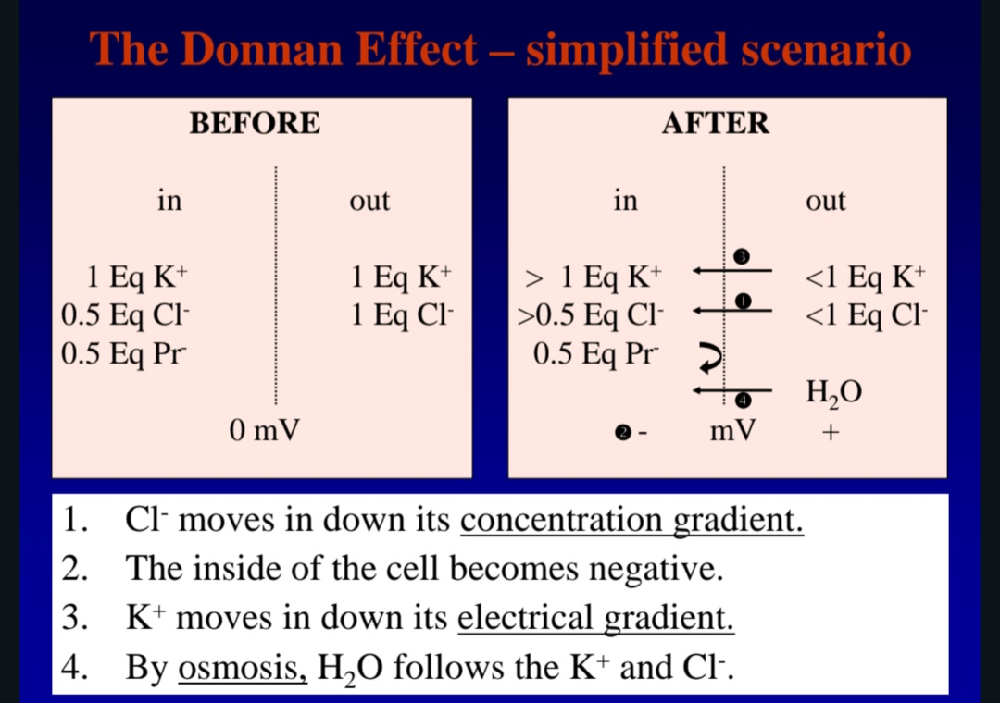
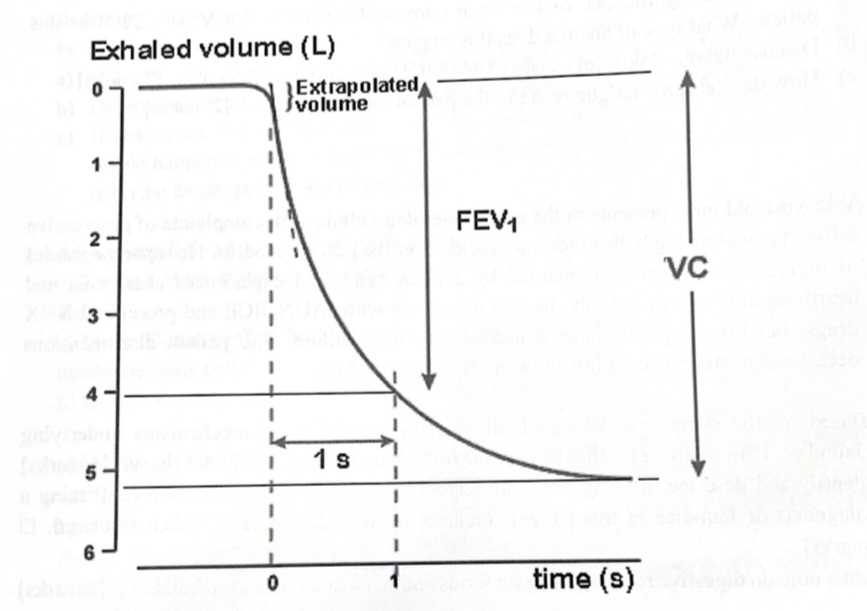

2. Write your computer number on every other page.
3. Answer ALL questions in SECTION A in the answer grid sheet.
4. Answer other sections in the given answer booklet.
5. Check diligently for any choices in answering.
Select the best answer for each question, then click Submit All MCQs below.
Your Score
Review the feedback below each question.
Answer in the answer booklet. Click Show Model Answer to reveal a full model answer with mark allocation.
Q1 Respiratory volumes & ventilation
Tidal volume = 400 mL
Dead space volume = 100 mL
Breathing frequency = 10 breaths/min
PCO₂ = 50 mmHg (arterial blood)
a) Minute ventilation (3 marks)
Minute ventilation (pulmonary ventilation, V̇E) is the total volume of air moved into and out of the lungs per minute.
V̇E = 400 mL × 10 breaths/min = 4 000 mL/min = 4.0 L/min
b) Alveolar ventilation (3 marks)
Alveolar ventilation (V̇A) is the volume of fresh air reaching the alveoli (and therefore participating in gas exchange) per minute. Air in the anatomical dead space does not take part in gas exchange and must be subtracted.
V̇A = (400 − 100) mL × 10 = 300 × 10 = 3 000 mL/min = 3.0 L/min
c) Effect of increased dead space (4 marks)
Alveolar ventilation would fall, because a larger fraction of each tidal breath is wasted in the dead space.
Fall = 3 000 − 2 500 = 500 mL/min (≈ 16.7 % reduction)
Physiological consequences:
- Reduced CO₂ elimination → CO₂ retention (hypercapnia) → respiratory acidosis. Note the given PaCO₂ of 50 mmHg already indicates hypoventilation (normal ≈ 40 mmHg).
- Reduced alveolar PO₂ → arterial hypoxaemia → tissue hypoxia.
- Stimulation of central (medullary) and peripheral (carotid/aortic body) chemoreceptors → increased respiratory drive, dyspnoea.
- If the dead-space increase is sustained (e.g. pulmonary embolism, shallow breathing, ventilator tubing), the patient may progress to respiratory failure and require increased minute ventilation or ventilatory support.
- Compensation: the only way to restore alveolar ventilation at a fixed tidal volume is to increase respiratory rate, which itself reduces the time for alveolar equilibration.
Q2 Body fluids
a) Malabsorption diarrhoea and body fluid balance (4 marks)
- Loss of water and electrolytes: diarrhoeal fluid is isotonic and rich in Na⁺, K⁺, Cl⁻ and HCO₃⁻. Loss of this fluid depletes the extracellular fluid (ECF) compartment → hypovolaemia, decreased plasma volume, decreased venous return and cardiac output, hypotension and (if severe) hypovolaemic shock.
- Acid–base disturbance: loss of bicarbonate-rich intestinal/pancreatic secretions produces a hyperchloraemic metabolic acidosis; loss of gastric acid (if vomiting coexists) can instead produce metabolic alkalosis.
- Potassium depletion: K⁺ loss in stool → hypokalaemia → muscle weakness, ileus, cardiac arrhythmias, and a further shift of K⁺ out of cells in exchange for H⁺ (worsening acidosis).
- Osmotic shift of water: unabsorbed solute in the gut lumen holds water osmotically, worsening the diarrhoea and drawing water from the ECF into the gut.
- Homeostatic compensation:
- ↓ ECF volume → ↓ arterial pressure → baroreceptor-mediated sympathetic activation and RAAS activation → vasoconstriction, Na⁺ and water retention by the kidney.
- ↑ Plasma osmolality → ADH (vasopressin) release → renal water conservation and thirst.
- Reduced renal perfusion → oliguria, raised urea/creatinine (pre-renal azotaemia).
- Consequences of failure: dehydration, hypovolaemic shock, acute kidney injury, acid–base and electrolyte derangement, and death if not corrected.
b) Is the Donnan effect hazardous? How is it prevented? (2 marks)
The Donnan (Gibbs–Donnan) effect is potentially hazardous because the trapped intracellular non-diffusible anions (proteins, phosphates) attract diffusible cations (K⁺) and exclude diffusible anions (Cl⁻), creating an asymmetric distribution of ions and an osmotic gradient that would draw water into the cell and cause cell swelling / lysis.
However, under normal conditions it is not hazardous because:
- The cell membrane is relatively impermeable to Na⁺ (low Na⁺ permeability), so Na⁺ does not follow the osmotic gradient freely.
- The Na⁺/K⁺-ATPase pump continuously extrudes 3 Na⁺ for every 2 K⁺ taken in, creating a steady-state electrochemical gradient and effectively "pumping water out" osmotically. This pump is therefore described as the osmotic stabiliser of the cell.
- Together, low Na⁺ permeability plus the Na⁺/K⁺ pump prevent cell swelling and maintain cell volume (no net water influx).
c) Concept map of the Donnan effect (4 marks)

Marking guide: 1 mark for identifying non-diffusible intracellular anions; 1 mark for the ionic asymmetry / electroneutrality consequence; 1 mark for the osmotic water shift; 1 mark for the corrective role of the Na⁺/K⁺ pump and the resulting stable cell volume.
Q3 Cardiac preload, afterload and orthostatic hypotension
a) Definitions and effects on cardiac output (3 marks)
- Preload = the degree of stretch of the ventricular myocardium at the end of diastole. It is best represented by the end-diastolic volume (EDV) or end-diastolic pressure, and is determined by venous return, blood volume, atrial contraction and ventricular compliance. It is the clinical correlate of the Frank–Starling mechanism: within physiological limits, an increase in preload increases the force of contraction and therefore stroke volume (and cardiac output).
- Afterload = the load (resistance) against which the ventricle must eject blood during systole. It is best represented by aortic pressure / systemic vascular resistance (and by wall stress, described by the Laplace relationship: wall stress ∝ pressure × radius ÷ wall thickness). An increase in afterload reduces stroke volume and increases myocardial oxygen demand and wall stress.
- Cardiac output = Stroke volume × Heart rate, so both preload and afterload directly influence cardiac output. Preload acts through the Frank–Starling relationship (↑ preload → ↑ stroke volume), while afterload acts inversely (↑ afterload → ↓ stroke volume).
b) Contribution to heart failure (3 marks)
- Preload overload: chronic volume overload (e.g. mitral/aortic regurgitation, ventricular septal defect, anaemia, hyperthyroidism) → eccentric hypertrophy with chamber dilatation → eventually the Frank–Starling curve is depressed and stroke volume falls despite a high preload. In heart failure, a high preload (raised filling pressure) also causes pulmonary and systemic congestion (dyspnoea, orthopnoea, oedema, raised JVP).
- Afterload excess: chronic pressure overload (e.g. hypertension, aortic stenosis, coarctation) → concentric hypertrophy → increased wall thickness and reduced compliance → diastolic dysfunction, subendocardial ischaemia and eventual systolic failure. Neurohumoral compensation (sympathetic activation, RAAS, vasoconstriction) further raises afterload, creating a vicious cycle.
- Compensatory mechanisms: initially helpful (Frank–Starling, sympathetic drive, RAAS, ADH, natriuretic peptides), but chronically they increase preload and afterload, promote remodelling, fibrosis and myocyte apoptosis, and worsen failure.
- Types of heart failure:
- Systolic (HFrEF) — impaired contractility, reduced ejection fraction (< 40 %), dilated ventricle, high preload.
- Diastolic (HFpEF) — impaired relaxation / increased stiffness, preserved ejection fraction, high filling pressures, small stiff ventricle.
- Left-sided vs right-sided — left-sided causes pulmonary congestion; right-sided causes systemic congestion (raised JVP, hepatomegaly, peripheral oedema).
- Acute vs chronic; high-output vs low-output failure.
c) Orthostatic hypotension – mechanism and clinical application (4 marks)
Definition: a fall of ≥ 20 mmHg in systolic BP (or ≥ 10 mmHg in diastolic BP) within 3 minutes of standing from a supine position.
Physiological mechanism:
- On standing, gravity pools ~ 500–700 mL of blood in the veins of the legs and splanchnic bed → ↓ venous return → ↓ ventricular filling (preload) → ↓ stroke volume → ↓ cardiac output → ↓ arterial pressure.
- Arterial baroreceptors (carotid sinus, aortic arch) detect the ↓ stretch → ↓ afferent firing via CN IX and CN X to the nucleus tractus solitarius.
- NTS → ↑ sympathetic outflow and ↓ vagal outflow → tachycardia, increased contractility, arteriolar vasoconstriction and venoconstriction → restoration of venous return and BP.
- Additional support: activation of RAAS (angiotensin II, aldosterone), ADH release, and the skeletal muscle pump with movement.
- Failure of these mechanisms (autonomic neuropathy, hypovolaemia, drugs, prolonged bed rest, ageing, diabetic neuropathy, Shy–Drager syndrome, Parkinson disease) produces orthostatic hypotension, often with dizziness, blurring of vision, syncope and falls.
Clinical applications:
- Bedside measurement of BP and pulse supine, immediately on standing, and at 1 and 3 minutes — a simple test of autonomic function.
- Diagnosis of autonomic neuropathy (diabetes, amyloidosis, Guillain–Barré), of hypovolaemia/haemorrhage, and of drug effects (antihypertensives, diuretics, α-blockers, tricyclic antidepressants).
- Assessment of fall risk in the elderly; guiding safe mobilisation after surgery or prolonged bed rest.
- Therapeutic rationale: slow position changes, compression stockings, adequate salt and fluid intake, avoiding large carbohydrate meals and hot baths, and using fludrocortisone or midodrine in refractory autonomic failure.
Q4 Gastric hormones, deglutition, vomiting and the gut brain
a) Three gastric hormones (3 marks)
| Hormone | Source | Stimulus | Actions |
|---|---|---|---|
| Gastrin | G cells of the gastric antrum | Peptides and amino acids in the lumen, gastric distension, vagal stimulation (GRP), alkaline pH | Stimulates HCl secretion by parietal cells, pepsinogen secretion by chief cells, gastric motility and mucosal growth; trophic to the gastric mucosa. Inhibited by acid (negative feedback via somatostatin). |
| Histamine | Enterochromaffin-like (ECL) cells of the gastric mucosa | Gastrin and acetylcholine | Acts on H₂ receptors on parietal cells → ↑ cAMP → ↑ HCl secretion. Potentiates the effects of gastrin and ACh (the "potentiation" phenomenon). Basis for H₂-blocker therapy (cimetidine, ranitidine). |
| Somatostatin | D cells of the gastric antrum and duodenum | Acid in the lumen, gastrin | Inhibits gastrin release, HCl secretion, pepsinogen secretion, gastric motility and pancreatic exocrine secretion. A general paracrine "brake" that prevents excessive acid secretion. |
| (Also acceptable) Ghrelin | P/D1 cells of the oxyntic mucosa | Fasting, empty stomach | Stimulates appetite and food intake (the "hunger hormone"), increases gastric motility and acid secretion; also involved in GH release and energy balance. |
Regulation of digestion and nutrient absorption: gastrin–histamine–ACh act together (potentiation) to produce a large, well-controlled acid output that denatures protein and activates pepsinogen; somatostatin provides negative feedback so that the gastric pH does not fall dangerously; and ghrelin links the digestive state to the CNS appetite centres. Optimal acid–pepsin activity is essential for protein digestion and for the absorption of vitamin B₁₂ (intrinsic factor) and iron.
b) Stages of deglutition (3 marks)
- Oral (voluntary) phase: the bolus is formed by mastication, the tongue presses it against the hard palate and pushes it posteriorly into the pharynx. Initiated voluntarily.
- Pharyngeal (involuntary) phase: the soft palate elevates to seal the nasopharynx; the epiglottis folds back over the larynx and the vocal cords close (protecting the airway); the upper oesophageal sphincter (cricopharyngeus) relaxes; the pharyngeal constrictors generate a peristaltic wave that drives the bolus into the oesophagus. Controlled by the swallowing centre in the medulla.
- Oesophageal (involuntary) phase: a primary peristaltic wave (continuation of the pharyngeal wave) sweeps the bolus down the oesophagus; if it fails, secondary peristaltic waves initiated by local distension complete the transport. The lower oesophageal sphincter relaxes ahead of the bolus (mediated by VIP/NO) and closes afterwards to prevent reflux. Gravity assists but is not essential (transport occurs even when lying down).
Vomiting regulation (3 marks)
- Stimuli: gastrointestinal irritation/toxins, distension, chemotherapy and drugs (via blood), motion sickness (vestibular), pain, raised intracranial pressure, psychological factors, pregnancy.
- Afferents: vagal and sympathetic afferents from the gut; vestibular nuclei (via the cerebellum); higher cortical and limbic centres.
- Central integration: the vomiting centre in the medulla (nucleus tractus solitarius / reticular formation) integrates the inputs. The chemoreceptor trigger zone (CTZ) in the area postrema, which lies outside the blood–brain barrier, detects blood-borne emetics and relays to the vomiting centre. The CTZ is rich in 5-HT₃ and D₂ receptors — the target of anti-emetics (ondansetron, metoclopramide).
- Efferent response:
- Autonomic: salivation, sweating, pallor, tachycardia, nausea.
- Gastrointestinal: retrograde peristalsis (reverse propulsion), relaxation of the lower oesophageal sphincter and pylorus.
- Respiratory: deep inspiration, closure of the glottis.
- Muscular: strong contraction of the diaphragm and abdominal wall muscles → ↑ intra-abdominal pressure → expulsion of gastric contents; the glottis remains closed to protect the airway.
c) The "gut brain" (enteric nervous system) (4 marks)
The gut brain is the enteric nervous system (ENS) — an intrinsic network of about 500 million neurones embedded in the wall of the gastrointestinal tract, capable of functioning autonomously (the "little brain" of the gut).
Components:
- Myenteric (Auerbach's) plexus — lies between the circular and longitudinal muscle layers; controls motility (peristalsis, segmentation).
- Submucosal (Meissner's) plexus — lies in the submucosa; controls secretion, blood flow and absorption.
- Sensory neurones (mechano-, chemo-, osmoreceptors), interneurones (ascending and descending), and motor neurones (excitatory and inhibitory).
- Neurotransmitters: acetylcholine, serotonin (5-HT), VIP, substance P, nitric oxide, enkephalins, CGRP.
Functions in digestion: coordinates peristalsis and segmentation; regulates sphincter tone; controls secretory and absorptive activity; regulates mucosal blood flow; integrates local reflexes (e.g. the peristaltic reflex, the gastrocolic reflex) independently of the CNS.
Brain–gut axis: the ENS is modulated by the parasympathetic (vagus, pelvic splanchnic) and sympathetic (splanchnic) divisions, and by the hypothalamic–pituitary–adrenal axis and gut microbiota — an important link in functional bowel disorders such as irritable bowel syndrome.
Mucosa (epithelium, lamina propria, muscularis mucosae)
↓
Submucosa — contains Meissner's (submucosal) plexus
↓
Muscularis externa — inner circular + outer longitudinal layers, with Auerbach's (myenteric) plexus between them
↓
Serosa / adventitia
Extrinsic input: Vagus (parasympathetic) + Splanchnic nerves (sympathetic) ↔ Enteric nervous system (intrinsic, autonomous)
Answer in the answer booklet. Click Show Model Answer to reveal a full model answer with mark allocation.
Q1 Chronic fatigue and macrocytic anaemia
a) Significance of MCV 122 fL (2 marks)
- MCV is the average volume of a single red cell. Normal range 77–93 fL. A value of 122 fL is markedly raised → macrocytosis.
- This indicates a macrocytic (megaloblastic) anaemia. The high MCV reflects impaired DNA synthesis in the erythroid precursors, producing nuclear–cytoplasmic asynchrony: the cytoplasm matures (haemoglobinises) while the nucleus remains immature, so the cells are large, oval and often hyper-segmented (megaloblasts).
- In this patient the history of dislike of vegetables for one year strongly suggests a folate deficiency (dietary). Vitamin B₁₂ deficiency (also macrocytic) must be excluded — classically in strict vegetarians/vegans or in pernicious anaemia — as must hypothyroidism, liver disease, myelodysplasia and drugs (methotrexate, hydroxyurea, zidovudine).
b) Physiological causes of other types of anaemia (2 marks)
| Morphological type | Mechanism | Examples |
|---|---|---|
| Microcytic hypochromic (MCV < 77 fL) | Defective haemoglobin synthesis (↓ haem or ↓ globin chains) | Iron deficiency (most common), thalassaemia, sideroblastic anaemia, lead poisoning, anaemia of chronic disease (late) |
| Normocytic normochromic (MCV 77–93 fL) | Acute blood loss, ↓ production or ↑ destruction | Acute haemorrhage, aplastic anaemia, chronic kidney disease (↓ erythropoietin), bone-marrow infiltration, hypothyroidism, anaemia of chronic disease |
| Macrocytic (MCV > 93 fL) | Impaired DNA synthesis or abnormal membrane lipids | Vitamin B₁₂ deficiency, folate deficiency, liver disease, hypothyroidism, myelodysplasia, drugs |
| Haemolytic | Premature red-cell destruction | G6PD deficiency, sickle-cell disease, hereditary spherocytosis, autoimmune haemolysis, malaria, transfusion reaction |
c) Chronic fatigue and anaemia (2 marks)
- Haemoglobin is the oxygen carrier; a Hb of 9.1 g/dL (well below the normal 13–17 g/dL in males) means the blood oxygen-carrying capacity is reduced by about 40 %.
- Reduced O₂ delivery to skeletal muscle and brain → cells rely more on anaerobic glycolysis → accumulation of lactic acid → early fatigue, weakness, poor concentration and exertional dyspnoea.
- Compensatory mechanisms (↑ cardiac output and heart rate, ↑ 2,3-DPG shifting the O₂ dissociation curve to the right, vasodilatation, ↑ erythropoietin) increase cardiac and respiratory work, contributing further to the sensation of fatigue and tiredness.
- The fatigue is therefore a direct physiological consequence of tissue hypoxia, not merely a psychological symptom.
Q2 Jaundice, cirrhosis and bile
a) Physiological mechanisms of jaundice vs cirrhosis (4 marks)
Jaundice (icterus) is the yellow discoloration of skin, sclerae and mucous membranes caused by hyperbilirubinaemia (serum bilirubin > 2–3 mg/dL). Bilirubin is produced from the breakdown of haem in the reticuloendothelial system; it is transported bound to albumin (unconjugated), taken up by hepatocytes, conjugated with glucuronic acid by UDP-glucuronosyltransferase, and excreted into bile. Jaundice arises when this pathway is disturbed at one of three levels:
- Pre-hepatic (haemolytic): excessive bilirubin production overwhelms hepatic conjugation → unconjugated hyperbilirubinaemia (e.g. haemolysis, ineffective erythropoiesis). Urine bilirubin is absent; urobilinogen is increased; there is no bilirubinuria.
- Hepatic (hepatocellular): impaired uptake, conjugation and/or excretion by damaged hepatocytes → mixed conjugated and unconjugated hyperbilirubinaemia (e.g. viral hepatitis, alcohol, drugs, cirrhosis).
- Post-hepatic (obstructive/cholestatic): obstruction to bile flow → conjugated hyperbilirubinaemia with bilirubinuria, pale stools, dark urine and pruritus (e.g. gallstones, carcinoma of the head of the pancreas, cholangiocarcinoma).
Cirrhosis is the end-stage of chronic liver injury, characterised by fibrosis and regenerative nodules that distort the hepatic architecture and vasculature. Jaundice in cirrhosis is therefore predominantly hepatocellular with an intrahepatic cholestatic component, but cirrhosis differs from simple jaundice in that it also produces:
- Portal hypertension → oesophageal/gastric varices, splenomegaly, caput medusae, ascites.
- Hepatic synthetic failure → hypoalbuminaemia (oedema, ascites), prolonged prothrombin time/INR (coagulopathy).
- Detoxification failure → hepatic encephalopathy (ammonia, false neurotransmitters), spider naevi, palmar erythema, gynaecomastia.
- Reduced bile production → steatorrhoea and fat-soluble vitamin deficiency.
Thus, jaundice is a sign reflecting hyperbilirubinaemia; cirrhosis is a disease process that may produce jaundice as one of several manifestations.
b) Diagnostic laboratory tests for jaundice (3 marks)
| Test | Rationale |
|---|---|
| Serum total, direct (conjugated) and indirect (unconjugated) bilirubin | Differentiates the type of jaundice: ↑ indirect = haemolytic/pre-hepatic; ↑ direct = obstructive/post-hepatic; mixed = hepatocellular. |
| Urine bilirubin and urobilinogen | Conjugated bilirubin is water-soluble and appears in urine in obstructive jaundice; urobilinogen is absent in complete obstruction and increased in haemolysis. |
| ALT and AST (transaminases) | Markers of hepatocellular injury; markedly raised in viral/alcoholic hepatitis, less so in obstruction. |
| Alkaline phosphatase (ALP) and γ-glutamyl transferase (GGT) | Markers of cholestasis/biliary obstruction; ALP is also raised in bone disease, so GGT confirms a hepatic origin. |
| Serum albumin and total protein | Reflect hepatic synthetic function; low albumin suggests chronic liver disease/cirrhosis. |
| Prothrombin time / INR | Reflects synthetic function and vitamin K status; prolonged in cirrhosis and cholestasis. |
| Full blood count and reticulocyte count | Detects anaemia and haemolysis (↑ reticulocytes, ↓ haptoglobin, ↑ LDH). |
| Abdominal ultrasound (and MRCP/ERCP if needed) | Identifies gallstones, biliary dilatation or pancreatic head mass causing obstruction; assesses liver texture and ascites. |
| Viral hepatitis serology, autoimmune markers (ANA, ASMA, AMA), α-fetoprotein | Establishes the aetiology of hepatitis or primary biliary cholangitis. |
| Liver biopsy (if indicated) | Definitive histological diagnosis of cirrhosis, hepatitis or infiltration. |
c) Digestive role of bile in fat foods, and what goes wrong in ascites (3 marks)
Role of bile in fat digestion and absorption:
- Emulsification: bile salts (and phospholipids) break large fat globules into small droplets, greatly increasing the surface area for pancreatic lipase.
- Micelle formation: bile salts combine with monoglycerides and free fatty acids to form water-soluble micelles, which ferry the products of fat digestion to the brush border for absorption.
- Transport and absorption: facilitate the absorption of long-chain fatty acids, cholesterol and the fat-soluble vitamins A, D, E and K.
- Neutralisation: alkaline bile neutralises acidic chyme from the stomach, allowing optimal pancreatic enzyme activity.
- Bile is produced by hepatocytes, stored and concentrated in the gallbladder, and released in response to cholecystokinin (CCK) and vagal stimulation. In cholestasis or biliary obstruction, fat digestion is impaired → steatorrhoea and fat-soluble vitamin deficiency (night blindness, osteomalacia, bleeding tendency).
Ascites — what goes wrong: ascites is the accumulation of fluid in the peritoneal cavity. In cirrhosis it results from a combination of:
- Portal hypertension → increased hydrostatic pressure in the splanchnic capillaries, favouring transudation of fluid into the peritoneum.
- Hypoalbuminaemia (reduced hepatic synthesis) → decreased plasma oncotic pressure → further fluid loss into the peritoneal cavity.
- Splanchnic arterial vasodilatation (↑ NO) → effective arterial hypovolaemia → activation of RAAS and ADH → sodium and water retention, which worsens the ascites.
- Lymphatic obstruction from hepatic fibrosis impairs the return of interstitial fluid.
- The result is a transudative (low-protein) ascites that causes abdominal distension, raised diaphragm with respiratory compromise, and predisposes to spontaneous bacterial peritonitis.
Q3 Spirometry in a mine worker

Interpretation of the spirometry recording (5 marks)
- What the graph shows: a maximal forced expiration from full inspiration. The vertical axis is exhaled volume (litres) and the horizontal axis is time (seconds). The extrapolated volume is the small volume lost before the test begins (back-extrapolation to time zero).
- FEV₁ = the forced expiratory volume in the first second — the volume of air expelled in the first second of a maximal forced expiration. It is read at the 1-second mark on the volume–time curve.
- FVC (or VC on the graph) = the total volume expelled during the full forced expiration.
- The key ratio is FEV₁/FVC (the FEV₁ ratio):
- Normal ≈ 0.75–0.80 (75–80 %).
- Obstructive pattern: FEV₁ is reduced disproportionately more than FVC → FEV₁/FVC < 0.70. The curve shows a prolonged, concave ("scooped") expiratory limb, taking many seconds to reach plateau — air trapping and increased airway resistance.
- Restrictive pattern: both FEV₁ and FVC are reduced proportionately → FEV₁/FVC is normal or increased (> 0.80). The curve falls steeply and reaches its plateau quickly because the total volume is small.
- In this mine worker: occupational dust exposure can produce either pattern — obstructive (coal-worker's COPD/bronchitis, chronic dust exposure) or restrictive (silicosis, coal-worker's pneumoconiosis, asbestosis with pulmonary fibrosis). The FEV₁/FVC ratio is therefore the decisive measurement: if it is low, the disease is obstructive; if it is normal/high with a low FVC, the disease is restrictive.
- Additional measurements that help: peak expiratory flow rate (PEFR), FEF₂₅–₇₅ (mid-expiratory flow), residual volume and total lung capacity (TLC) — TLC is increased in obstruction (hyperinflation) and decreased in restriction. A bronchodilator response (↑ FEV₁ ≥ 12 % and ≥ 200 mL) suggests reversible obstruction (asthma).
- Conclusion: the spirometry must be interpreted together with the FEV₁/FVC ratio, the shape of the curve, TLC and the clinical/occupational history.
Obstructive vs restrictive lung disease (5 marks)
| Feature | Obstructive | Restrictive |
|---|---|---|
| Primary defect | Increased airway resistance (narrowed/obstructed airways) | Reduced lung or chest-wall compliance (stiff lungs/chest wall) |
| FEV₁ | ↓↓ | ↓ |
| FVC | Normal or ↓ | ↓↓ |
| FEV₁/FVC ratio | < 0.70 (low) | Normal or > 0.80 (high) |
| Total lung capacity (TLC) | Normal or ↑ (hyperinflation, air trapping) | ↓ |
| Residual volume (RV) | ↑ | ↓ or normal |
| Expiratory flow–volume curve | Scooped/concave, prolonged expiration | Small but normal-shaped curve |
| Gas transfer (DLCO) | ↓ in emphysema, normal in asthma | ↓ (fibrosis), normal in chest-wall/neuromuscular disease |
| Main mechanism of hypoxia | V/Q mismatch, hypoventilation | V/Q mismatch, diffusion limitation, hypoventilation |
| Examples | Asthma, chronic bronchitis, emphysema (COPD), bronchiectasis, cystic fibrosis, foreign body, tumour | Pulmonary fibrosis (silicosis, asbestosis, coal-worker's pneumoconiosis, sarcoidosis, idiopathic pulmonary fibrosis), kyphoscoliosis, obesity, pleural effusion, neuromuscular disease (myasthenia gravis, Guillain–Barré), interstitial lung disease |
Clinical correlation in this patient: a mine worker with a chronic lung disease most likely has an occupational pneumoconiosis. Silicosis and asbestosis are classically restrictive (fibrosis, ↓ FVC, normal/high FEV₁/FVC, ↓ DLCO, ↓ TLC), whereas coal dust and other irritants can produce obstructive COPD (↓ FEV₁/FVC, ↑ RV and TLC). The distinction is made by the FEV₁/FVC ratio and lung volumes, and it determines management (bronchodilators and smoking cessation for obstruction; removal from exposure, supportive care and treatment of the underlying fibrosis for restriction).